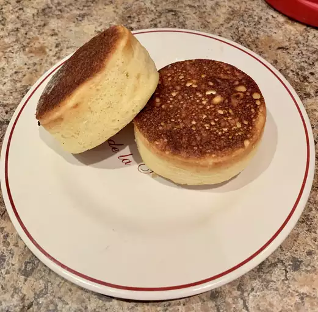

Japanese souffle Pancakes

Japanese souffle pancakes
Mouthwateringly fluffy and thick Japanese pancakes! A true indulgence, these pancakes are soft and springy and even contain a secret ingredient, mayonnaise. With it being comprised of emulsified oil and vinegar there's no need to worry as it is guranteed to make the pancakes thicker and fluffier, giving it just the right "lift", any regular mayo should suffice.
Ingredients
- 1 cup of mil
- 1 tablespoon white vinegar
- 1 cup all purpose flour
- 1/4 cup white sugar
- 2 teaspoons baking powder
- 2 large eggs, seperated
- 1/4 teaspoon vanilla extract
- 1 tablespoon Japanese mayonnaise
- 1 tablespoon butter
Steps
- Combine milk and vinegar in a large bol. Allow to sit until mik has soured, about 5 minutes.
- Meanwhile, sift together flour, sugar, and baking powder in a seperate bowl; set aside.
- Beat egg whites in a glass, metal, or ceramic bowl with an electric mixer until stiff peaks form.
- Add egg yolks and vanilla extract to the soured milk; mix until well combined and pour into the center of the flour mixture. Use a whisk to combine all ingredients. Add mayonnaise and stir until there are no lumps. Fold in egg whites.
- Heat a griddle on the stoverop over medium-low heat and melt butter. Grease round pancake molds and place onto the buttered griddle. Fill each mold halfway with batter. Cook until pancakes are golden brown on the bottom and not too liquid across the top, 4-6 minutes. Flip each pancake and mold together. Cook until the other sides are golden and pancakes have doubled in thickness, 4-6 more minutes. Slide the molds off the pancakes.